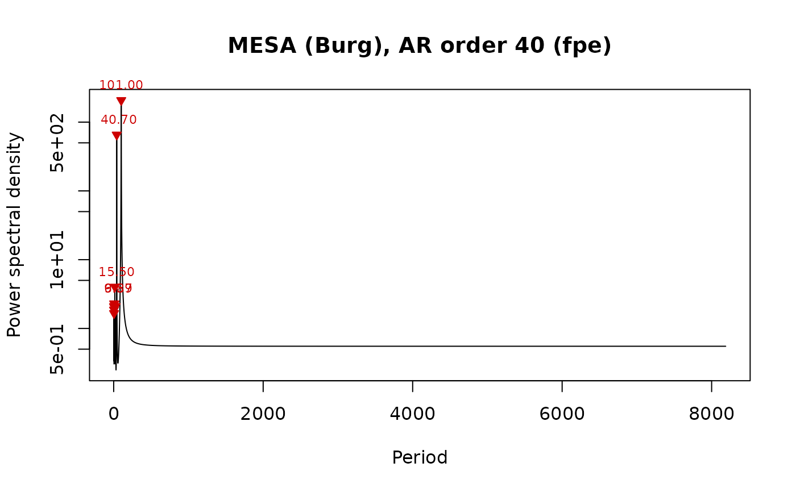
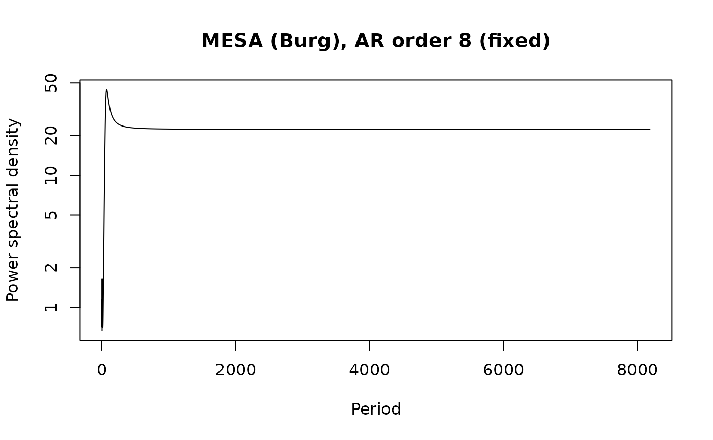

Estimates the power spectrum of a time series with the maximum entropy
method of Burg (1967, 1975). An autoregressive (AR) model is fitted to the series with the
Burg recursion, which minimises the forward and backward prediction error, and the power
spectrum is the spectrum of that AR model. Compared with the periodogram or the multi-taper
method (astrochron::mtm), MESA gives very sharp spectral lines for short records and
needs no window, which is useful for the few cycles typical of cyclostratigraphic data.
The price is that the number of peaks and their width depend on the model order, so the order
is chosen with an information criterion (default the final prediction error, FPE) or set by hand.
Spurious peak splitting at high orders is a known property of the method; compare several
orders or criteria (see criteria in the output) before interpreting a peak.
Arguments
- data
Record to analyse: a two-column matrix or data frame with depth or time in column 1 (strictly increasing after sorting) and the proxy value in column 2; rows with
NAare removed and at least 8 samples are needed. It should be evenly sampled, seeregularise. Required (Default=NULL).- order
Order of the AR model, i.e. the number of AR coefficients (integer, between 1 and N - 3 for N samples). Higher orders give sharper and more peaks.
NULLselects the order withcriterion.Default=NULL.- order_max
Largest AR order considered when the order is selected (integer, >= 1; it is capped at N - 3).
NULLusesmin(floor(N / 3), 300).Default=NULL.- criterion
Order-selection criterion (character), one of
"fpe"(final prediction error, Akaike 1969),"aic"(Akaike information criterion),"mdl"(minimum description length of Rissanen, the most conservative) or"cat"(criterion autoregressive transfer of Parzen); ignored whenorderis given.Default=c("fpe", "aic", "mdl", "cat"), i.e."fpe".- demean
Remove the mean of the series before the analysis (logical, TRUE or FALSE).
Default=TRUE.- detrend
Remove a linear trend before the analysis instead of only the mean (logical, TRUE or FALSE).
Default=FALSE.- regularise
Linearly interpolate an unevenly sampled series to its median sampling interval, with a message (logical, TRUE or FALSE); with
FALSEan unevenly sampled series gives an error.Default=TRUE.- nfreq
Number of frequencies, evenly spaced between
fminandfmax, at which the spectrum is evaluated (integer, > 1).Default=2048.- fmin
Lowest frequency of the spectrum, in cycles per unit of the first column of
data(numeric, >= 0 and <fmax).Default=0.- fmax
Highest frequency of the spectrum, in cycles per unit of the first column of
data(numeric, >fmin; values above the Nyquist frequency are reduced to it).NULLuses the Nyquist frequency.Default=NULL.- n_peaks
Maximum number of spectral peaks (local maxima) returned, the strongest ones (integer, > 0).
Default=10.- window
Part of the record to analyse,
c(from, to)in the unit of the first column ofdata(numeric vector of length 2, from < to). The window may extend beyond the record; the missing part is filled according topad, so that a spectrum of a window centred on the very top or bottom can be made.NULLuses the entire record.Default=NULL.- pad
How samples of
windowthat lie outside the record are filled (character):"reflect"(mirror the record at its edge),"mean"(the mean of the part of the window inside the record),"zero"(zero, i.e. the mean of the record after demeaning) or"none"(the window is cut at the edge of the record). Padding only adds samples outside the record; it never changes the record. Only used withwindow.Default=c("reflect", "mean", "zero", "none"), i.e."reflect".
Value
A list of class mesa_spectrum with elements
- spectrum
data frame with
frequency,periodandpower.- peaks
data frame with the strongest local maxima:
frequency,period,power, andprominence(peak power divided by the lower of the two neighbouring minima).- order
the AR order used.
- ar
the AR coefficients.
- noise_variance
the prediction error variance of the final model.
- criteria
data frame with the criteria (fpe, aic, mdl, cat) for every order 0 to the maximum order.
- dt
sampling interval.
- n
number of samples.
Details
The power spectral density is one-sided and scaled so that its integral over frequency
equals the variance of the (demeaned) series. The AR coefficients are returned in the convention
x[t] = sum(ar[j] * x[t - j]) + e[t], the same as stats::ar.burg.
References
Burg, J.P., 1967. Maximum entropy spectral analysis. 37th Annual International Meeting, Society of Exploration Geophysicists, Oklahoma City.
Burg, J.P., 1975. Maximum entropy spectral analysis. PhD thesis, Stanford University.
Akaike, H., 1969. Fitting autoregressive models for prediction. Annals of the Institute of Statistical Mathematics 21, 243-247.
Parzen, E., 1974. Some recent advances in time series modeling. IEEE Transactions on Automatic Control 19, 723-730.
Rissanen, J., 1978. Modeling by shortest data description. Automatica 14, 465-471.
Ulrych, T.J., Bishop, T.N., 1975. Maximum entropy spectral analysis and autoregressive decomposition. Reviews of Geophysics 13, 183-200.
Examples
# two cycles (100 and 41 units) plus noise in a short record
set.seed(1)
t <- seq(0, 600, by = 2)
y <- sin(2 * pi * t / 100) + 0.6 * sin(2 * pi * t / 41) + rnorm(length(t), sd = 0.5)
m <- mesa_spectrum(data.frame(t, y))
m$order
#> [1] 40
m$peaks
#> frequency period power prominence
#> 1 0.009892526 101.086420 2081.080096 3777.212196
#> 2 0.024548119 40.736318 655.839447 2092.447053
#> 3 0.064606742 15.478261 4.029652 7.468795
#> 4 0.151685393 6.592593 2.303860 3.066819
#> 5 0.101367855 9.865060 2.290590 2.535377
#> 6 0.215559355 4.639093 2.101775 1.410870
#> 7 0.039325843 25.428571 2.099969 3.825387
#> 8 0.112237421 8.909684 2.043940 2.262368
#> 9 0.225329751 4.437940 1.871681 1.256414
#> 10 0.204201270 4.897129 1.664065 1.562296
plot_mesa_spectrum(m)

# a fixed, low order gives a smoother spectrum
m8 <- mesa_spectrum(data.frame(t, y), order = 8)
plot_mesa_spectrum(m8, peaks = FALSE)
